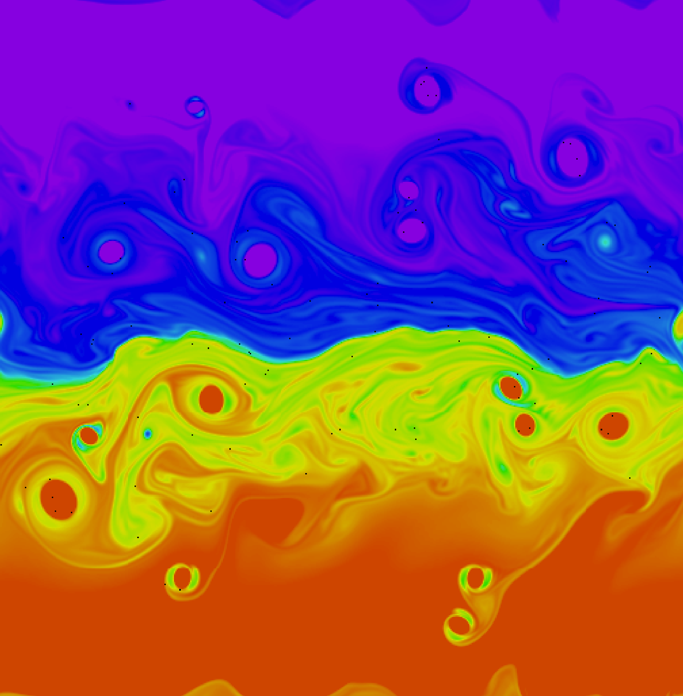

class: center, middle .title[The Actor Model and Pony] .author[Willem Wyndham] .institution[UMD, College Park] .date[June 23, 2016] .footnote[Created with [{Remark.js}](http://remarkjs.com/) using [{Liminal}](http://www.jmlilly.net/liminal.zip)] --- Programming language design must efficiency in execution and expressiveness - 1 --- "By concurrency we mean the potentially parallel execution of desired actions." - 3 --- > There is little interaction between the various "jobs" or "processes' that are executed concurrently. Indeed, the correctness of an operating system is dependent on making sure that none of the numerous (user-defined) processes affect each other. --- Actor Model Theory about concurrency. - Better suited for natural models --- # Design Choices - Nature of computer elements - Global synchrony versus asynchronous elements - Mode of interaction between computing elements - Degree of Fairness - Reconfigurability and extensibility --- # Nature of Computer elements 1. Sequential processes 2. Functions transforming data values 3. Actors --- ## Sequential processes The operational notion of a sequential process is that it performs a sequence of transformations on states, where a state is a map from locations to values such as integers. These transformations might require certain inputs and produce outputs, which means there is a possibility for deadlock. Each process is sequential but they can execute in parallel. --- ## Functions Transforming Data values --- ## Actors Actors are computational agents which map each incoming communication to a 3-tuple consisting of: 1. a finite set of communication sent to other Actors 2. a new behavior (which will govern the response to the next communication processed) 3. a finite set of new actors created --- "Creation of new actors guarantees the ability to abstractly increase the distributivity of the computation as it evolves." - 14 --- ## Interaction Between agents --- ## Degree of Fairness >...a realistic model must assume that the arrival order of communications sent is both arbitrary and entirely unknown. In particular, the use of the arbiter as the hard- ware element for serialization implies that the arrival order is physically indeterminate. --- ### Guarantee of Delivery > There are, realistically, no un-bounded buffers in the physically realizable universe. > There is, however, no general limit on buffers: the size of any real buffer will be specific to any particular implementation and 'its limitations. The point of building a semantic model is to abstract away from such details 'inherent 'in any implementation. The guarantee of delivery does not assume that each message is "meaningfully" processed. An Actor could ignore a message on delivery or indefinitely buffer some communications. The guarantee of delivery is one form of *fairness*. A strong requirement for fairness is that all messages sent are received in a random order no matter their properties. A weaker one would be that a system delivers 3 "short" messages for each "long" it delivers. --- ## Reconfigurability and Extensibility If a process only communicates with a set of processes throughout its lifetime, its *interconnection topology* is said to be *static*. If in the course of its lifetime a process communicates to a new process it is *dynamic*. A static topology is easier to reason about at compile time, however, it has severe limitations in representing the behavior of a real system. Consider the example of a *resoure-manager* for two printers. We can assume that the printers are identical and are interchangeable. This resource-manager can: 1. Send the print requests to the __first available__ printer 2. When a print request has been processed, to send a *receipt* to the user requesting the printing. If the *resource-manager* were static then it must either communicate with both printers or neither. While in reality we want it to pick which printer to send the request based on its availability. You can imagine this graphically. If we make this system dynamic then the edges connecting the resource-manager and the printers represents possible communication. --- # Defining an Actor system > Computation in a system of actors is in response to communications sent to the system communications are contained in Tasks. Computing a task can result in new tasks and new actors. Processed tasks and actors no longer "useful" can be removed safely from the system. Thus the configuration of an actor system is defined by its actors and the set of all unprocessed tasks. --- # Tasks "a future 'is a communication that can be sent a communication to evaluate itself" - 34 --- # Description of actors - mail address to a sufficiently large mail queue - It's behavior, which is a function of the communication accepted. Thus we can imagine an actor having both a queue for messages as they arrive and an *actor machine* that points to the message being processed. --- Remark is a Javascript interpreter for the Markdown language, intended for presentations. Go to its [{home page}](http://remarkjs.com/) for more details. -- The [{Markdown}](https://daringfireball.net/projects/markdown/) language itself is a very simple markup language, much easier than writing in LaTeX or HTML. -- Remark lets you write a presentation in Markdown, and have it rendered live by a browser, with no compilation needed. -- Thus, you can give a presentation directly from your browser. -- Liminal is a theme I wrote for Remark that is intended to be suitable for scientific presentations. -- It is just a little bit of CSS and some Javascript I found elsewhere. -- Feel free to use and/or modify it. --- class: left ## What is Cool About Remark? 1. I've used Beamer for years. -- 2. But I find it a bit cumbersome to make new slides, honestly. -- 3. And one grows tired of having to compile. -- 4. Plus, you don't get something you can show on the web. -- ### Okay, tell me more. 1. It's very easy to make a list in Markdown. 1. You don't have to worry about the numbering. 5. (Look at the source to understand what I mean here.) -- I like that you can just write in a simple way and get something you can show for a presentation and also put on the web. -- Markdown does take some getting used to. It assigns meaning to some invisible characters, like two spaces in a row. -- So if you have spaces at the end of line when you shouldn't, or don't when you should, this can throw off the formatting. Just a heads up. -- Probably, if you prefer source (e.g. Beamer) to WYSIWYG (e.g. PowerPoint), you'll find it easy to work with Remark. --- class: center # Show Me a Figure --  Here is a figure. -- To delay the presentation of an item, like we're doing here, you put a line containing **only** two hypens '--' followed by an empty line. --- class: center ## Can I Do Animations? <video preload="auto" width="70%" height="auto" data-setup="{}" autoplay loop controls><source src="../videos/vortexmovie.mp4" type="video/mp4" /></video> Yes, those are extremely easy. --- class: left ## How About Some Gnarly Equations? I'm glad you asked. With a link to the MathJax Javascript library, you can write inline equations `\(E=mc^2\)`, or full-line equations like: `$$\Gamma(t)= \pi \, \Im\left\{ \mathbf{x}_+^H(t) \, \frac{\mathrm{d}}{\mathrm{d} t}\mathbf{x}_+(t)\right\}$$` You can just write in LaTeX, with minor modifications for specifying in-line or full-line equations. Also, in Remark, the equations are surrounded by backquotes, as you see in the source. [{MathJax}](https://www.mathjax.org/) lets you write your equations in other ways; see the documentation for details. Note that writing equations in MathJax impacts the portability of your talk. Currently, this template links to a local copy of Remark, but a remote (online) copy of MathJax. If you want the equations to work when you are offline, you need to copy the entire MathJax project, about 150 Mb. See the comments at the bottom of this file. --- class: left ## What is Liminal? Almost nothing, hence the name. It is a minimal theme for Remark for scientific presentations. It is just this file together with the accompanying directory structure. I added the following: * Markup for a title slide * Choice of font and a black-and-gray color scheme * Markup for references .cite[See Moriarty (1888) and Adler, Holmes, and Watson (1891)] * A fade in/out transition that I found on the web * Some comments of things I learned in making it work In Liminal the text is monochromatic, apart from for the references, to show off your colorful figures. Curly braces indicate links, like this one to my [{home page}](http://www.jmlilly.net). I just think it looks cool. Of course you can change the styling very easily. I was just going to use this for own work, but several people have asked me about it, so I decided to make the template available. --- class: middle, center # That's All! To get started, [{download}](http://www.jmlilly.net/liminal.zip) this template. For more information see the Remark [{web site}](http://remarkjs.com/) or [{wiki}]( https://github.com/gnab/remark/wiki). Also, we are on the bleeding edge here, so beware of things like cross-browser compatibility. Don't just assume it is going to look great when you give your talk on another computer—check first. Have fun!